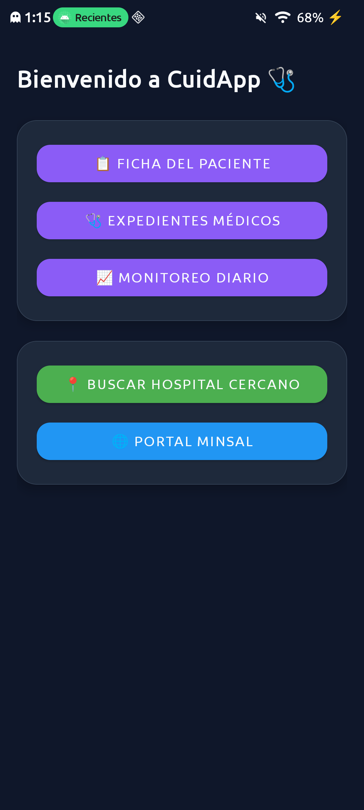
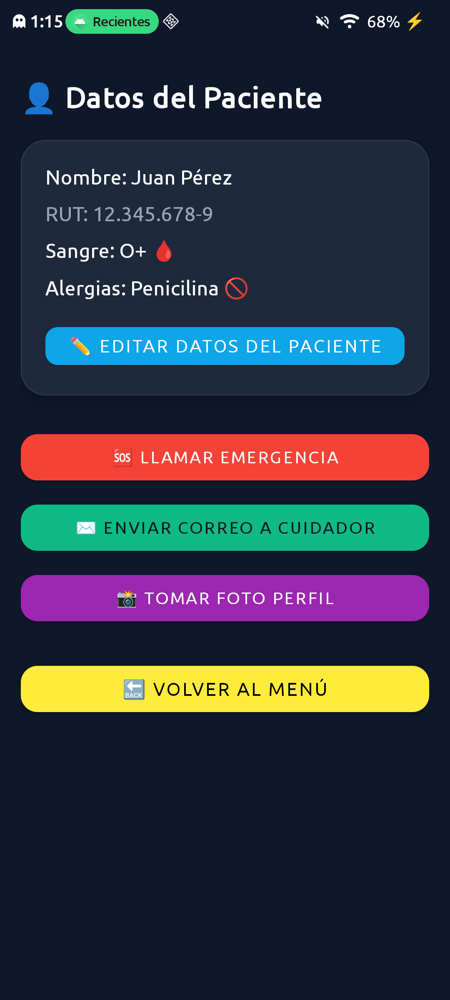
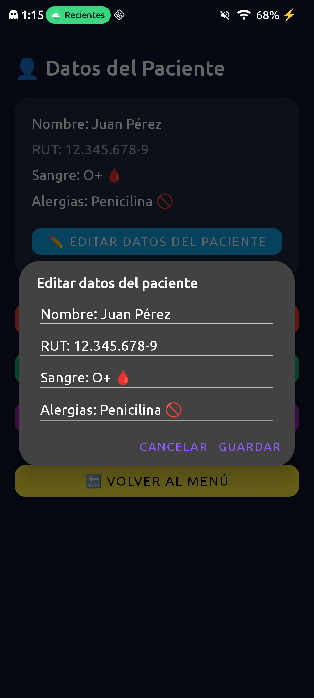
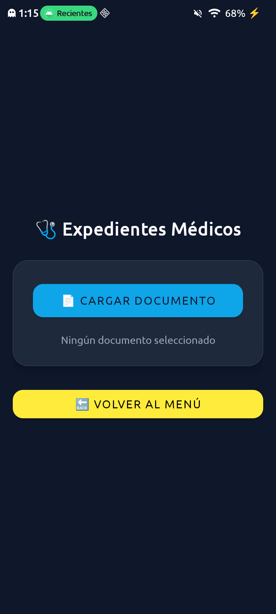
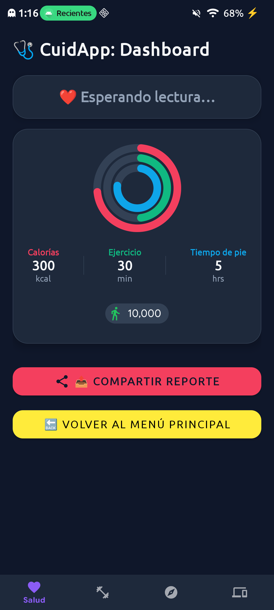

Tu Asistente de Salud Integral — Plataforma Nativa Android
Profesor: Pedro Gatica
Una aplicación médica diseñada para centralizar la información del paciente, facilitar el acceso a expedientes y monitorear la salud en tiempo real.
Plana (Java / XML, sin MVC/MVVM)
4 Activities + 1 Service
Java - Android
XML · Material Components · Tema Oscuro Material 3
API 31 (Android 12) / API 36 (Android 16) / API 36
com.santo_tomas.cuidapp
| Tipo | Archivo | Función |
|---|---|---|
| Launcher | MenuPrincipalActivity |
Menú principal, mapas y navegador |
| Activity | FichaPacienteActivity |
Datos del paciente, llamada, correo y cámara |
| Activity | MisExpedientesActivity |
Expedientes médicos (selector de PDF) |
| Activity | DashboardActivity |
Resumen de salud, BPM en vivo y alertas de taquicardia |
| Service | ServicioMonitoreo |
Hilo que simula el sensor cardíaco |
| Utilidad | InsetsUtil |
Ajuste edge-to-edge para barras del sistema |
MenuPrincipalActivity)
Punto de entrada con navegación directa hacia los tres módulos clínicos clave y dos acciones rápidas integradas con el sistema.
geo:0,0?q=hospital).FichaPacienteActivity)

Visualización clara de Nombre, RUT, Grupo Sanguíneo y Alergias para atención médica oportuna.
Diálogo modal interactivo para modificar y actualizar los datos del paciente sin abandonar la pantalla.
ACTION_DIAL).ACTION_SENDTO).ACTION_IMAGE_CAPTURE).MisExpedientesActivity)
Módulo dedicado a la gestión y consulta de exámenes, recetas y documentos clínicos digitales del paciente.
Utiliza ACTION_GET_CONTENT con tipo MIME application/pdf para invocar el explorador de documentos del sistema de forma segura.
Botón Volver al Menú que limpia la pila de actividades mediante FLAG_ACTIVITY_CLEAR_TOP y SINGLE_TOP.
DashboardActivity)
Visualización de calorías quemadas (300 kcal), tiempo de ejercicio (30 min), horas de pie (5 hrs) y meta de pasos (10,000).
Alimentado por ServicioMonitoreo: genera lecturas periódicas de BPM y dispara alertas automáticas en caso de taquicardia (> 100 BPM).
Botón que usa ACTION_SEND para enviar un reporte resumido de la sesión por WhatsApp, correo o cualquier aplicación compatible.
| # | Origen | Destino | Método | Propósito |
|---|---|---|---|---|
| 1 | MenuPrincipalActivity |
FichaPacienteActivityMisExpedientesActivityDashboardActivity
|
navegarA() |
Navegación desde el menú hacia el resto de las vistas |
| 2 | Las 3 Activities | MenuPrincipalActivity |
volverAlMenu() |
Retorno global (CLEAR_TOP +
SINGLE_TOP)
|
| 3 | DashboardActivity |
ServicioMonitoreo |
iniciarServicioMonitoreo() |
Inicia el Service con el Thread de monitoreo cardíaco |
| # | Ubicación | Acción | Método | Funcionalidad |
|---|---|---|---|---|
| 4 | FichaPacienteActivity |
ACTION_DIAL |
llamarEmergencia() |
Abre el marcador con el número de emergencia (131) |
| 5 | FichaPacienteActivity |
ACTION_SENDTOmailto: |
enviarCorreo() |
Abre el cliente de correo para escribir al cuidador |
| 6 | FichaPacienteActivity |
ACTION_IMAGE_CAPTURE |
abrirCamara() |
Abre la cámara para tomar la foto de perfil |
| 7 | MenuPrincipalActivity |
ACTION_VIEWgeo: |
abrirMapaHospitales() |
Abre mapas buscando hospitales cercanos |
| 8 | MenuPrincipalActivity |
ACTION_VIEWhttps: |
abrirPortalMinsal() |
Abre el navegador en el portal del Ministerio de Salud |
DashboardActivity
ACTION_SEND — Comparte el
reporte de salud como texto.
MisExpedientesActivity
ACTION_GET_CONTENT —
Selecciona un PDF desde el explorador de archivos.
ServicioMonitoreo ejecuta un Thread
propio que genera BPM aleatorio cada 3 s. Si supera 100, simula
taquicardia sin bloquear el UI Thread.
Broadcasts restringidos a la propia app (setPackage). Recibe con BroadcastReceiver +
RECEIVER_NOT_EXPORTED. Un único
diálogo de alerta se actualiza en vez de apilar uno nuevo cada 3
s.
Hilo detenido con interrupt() +
bandera volatile al cerrar el
Dashboard. Receptor registrado en
onResume() y desregistrado en
onPause().
targetSdk 36: pantallas de borde a
borde. InsetsUtil aplica el espacio
de las barras del sistema para que nada quede tapado.
CuidApp — Tu Asistente de Salud Integral en Android Nativo